знаки, сигнали та дорожня розмітка
У розділі 2, ви і ваш транспортний засіб, ви дізналися про деякі органи керування у вашому транспортному засобі. Цей розділ — зручний довідковий матеріал із прикладами найпоширеніших знаків, сигналів і дорожньої розмітки, які тримають рух організованим і плавним.
Знаки
Знаки читають трьома способами: за формою, кольором і повідомленням, надрукованим на них. Розуміння цих трьох способів класифікації знаків допоможе вам визначити значення знаків, які для вас нові.
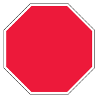
Зупинка
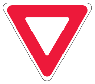
Уступіть право переваги
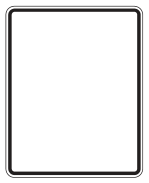
Показує норми водіння
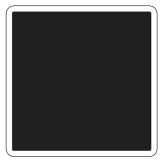
Пояснює використання смуг
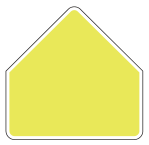
Знаки шкільної зони — флуоресцентні жовто-зелені
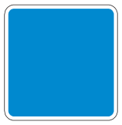
Повідомляє про послуги для водіїв
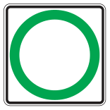
Показує дозволену дію
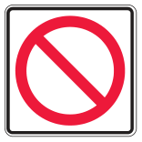
Показує дію, яка не дозволена
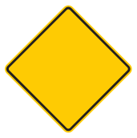
Попереджає про небезпеки попереду
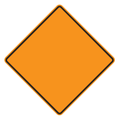
Попереджає про зони дорожніх робіт
Залізничний переїзд
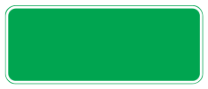
Показує відстань і напрямок
Регулювальні знаки
Ці знаки повідомляють вам про закони та норми водіння. Ігнорувати їх — правопорушення за B.C. Motor Vehicle Act (закон Британської Колумбії про транспортні засоби). Водії, які не виконують вказівки цих знаків, можуть отримати штрафні санкції.
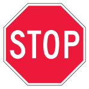
Повна зупинка — рухайтеся далі лише тоді, коли це безпечно
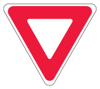
Уступіть право переваги іншим транспортним засобам і пішоходам, які переходять дорогу
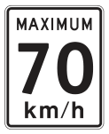
Максимальна дозволена швидкість, коли дорога чиста й суха, а видимість добра.
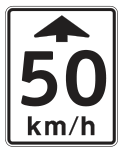
Показує нижче обмеження швидкості попереду
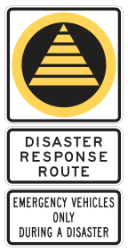
Не виїжджайте на цю дорогу під час великих катастроф — дорогою можуть користуватися лише транспортні засоби екстрених служб
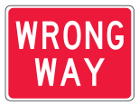
Не їдьте в цьому напрямку — зазвичай установлюють на виїзних з’їздах
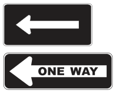
Односторонній рух — показує напрямок руху на поперечній вулиці
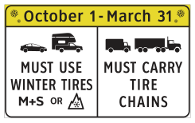
Коли знак виставлено, потрібно використовувати зимові шини або ланцюги протиковзання
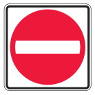
В’їзд заборонено
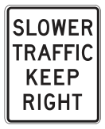
Переїдьте у праву смугу, якщо рухаєтеся повільніше за загальний потік
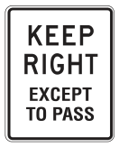
Тримайтеся правої смуги, крім обгону
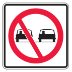
Обгін заборонено
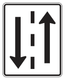
Двосторонній рух — тримайтеся правої смуги, крім обгону
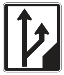
Смуга для обгону попереду
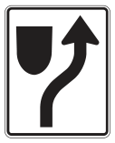
Тримайтеся праворуч від розділювача
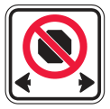
Зупинка заборонена від цього місця до наступного знака заборони зупинки
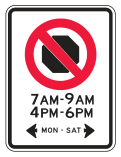
Зупинка заборонена у вказані години від цього місця до наступного знака
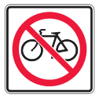
Далі рух на велосипеді заборонено
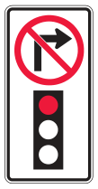
Поворот праворуч на червоний сигнал заборонено
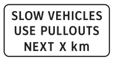
Повільний транспорт має користуватися кишенями на вказаній відстані
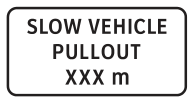
Кишеня для повільного транспорту через вказану кількість метрів
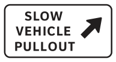
Кишеня для повільного транспорту
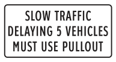
Повільний транспорт, що затримує 5 транспортних засобів, має скористатися кишенею
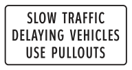
Повільний транспорт, що затримує інші транспортні засоби, користується кишенями
Знаки школи, ігрового майданчика та пішохідного переходу
Ці знаки повідомляють вам про правила, яких треба дотримуватися в місцях, де потрібна особлива обережність.
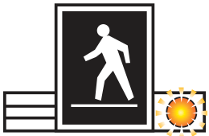
Пішохідний перехід з активацією пішоходом — готуйтеся зупинитися, якщо блимає сигнал
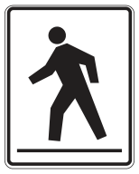
Пішохідний перехід — уступіть право переваги людям, які переходять
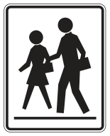
Шкільний пішохідний перехід — уступіть право переваги пішоходам — якщо є регулювальник переходу, виконуйте його вказівки
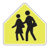
Шкільна зона — знижуйте швидкість, коли поблизу є діти
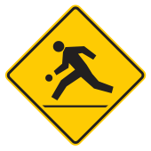
Поблизу ігровий майданчик — будьте готові знизити швидкість
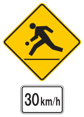
Зона ігрового майданчика — обмеження 30 км/год діє щодня від світанку до сутінків
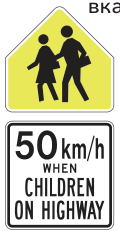
Шкільна зона — обмеження 50 км/год діє з 8:00 до 17:00 у шкільні дні, коли діти перебувають на дорозі або на узбіччі
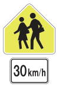
Шкільна зона — якщо на табличці під знаком указано лише обмеження швидкості, воно діє з 8:00 до 17:00 у шкільні дні
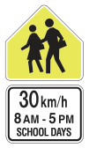
Шкільна зона — табличка під знаком указує обмеження швидкості та години, коли воно діє (у цьому випадку обмеження 30 км/год діє з 8:00 до 17:00 у шкільні дні)
Знаки використання смуг
Знаки, які показують, якими смугами можна повертати або їхати прямо, установлюють над смугою або збоку від смуги перед перехрестям. Якщо ви перебуваєте у призначеній смузі, ви повинні рухатися в напрямку, указаному стрілками. Ви не можете заїжджати в призначену смугу або виїжджати з неї, поки перебуваєте на перехресті.
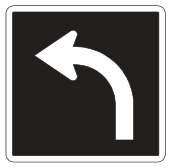
Тільки поворот ліворуч
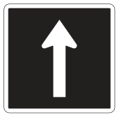
Тільки прямо
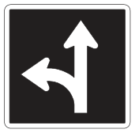
Прямо або поворот ліворуч
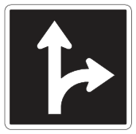
Прямо або поворот праворуч
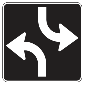
Транспортні засоби з обох напрямків повинні повертати ліворуч, рух прямо заборонено
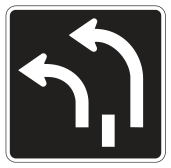
Транспортні засоби в обох цих смугах повинні повертати ліворуч
Знаки керування поворотами
Знаки керування поворотами розміщені безпосередньо над перехрестям. Ви повинні рухатися в напрямку, указаному стрілкою.
Тільки поворот ліворуч
Тільки прямо — повороти заборонені
Тільки поворот праворуч або ліворуч
Поворот праворуч заборонено у вказані години
Знаки паркування
Знаки паркування повідомляють вам, де і коли дозволено паркуватися. Якщо ви паркуєтеся з порушенням правил, ви можете отримати штраф, ваш транспортний засіб можуть відбуксирувати (або і те, і те).
Паркування з обмеженням часу у вказані години
Паркуватися тут заборонено
Паркування заборонено у вказані години
Паркування лише для транспортних засобів зі знаком паркування для осіб з інвалідністю, які перевозять таку особу
Знаки зарезервованих смуг
Зарезервовані смуги позначає білий ромб, намальований на покритті дороги. Знаки зарезервованих смуг також розміщують над смугами або біля смуг, зарезервованих для певних транспортних засобів, як-от автобусів чи транспорту з високим заповненням (HOV). Інші знаки HOV можуть давати додаткову інформацію про те, хто може користуватися смугою HOV.
У цій смузі лише автобуси
У цій смузі лише автобуси та HOV — може вказувати, скільки людей має бути в HOV
Крайня права смуга поперечної вулиці попереду — зарезервована смуга
Попереджувальні знаки
Більшість попереджувальних знаків жовті та ромбоподібні. Вони попереджають про можливу небезпеку попереду.
Звивиста дорога попереду
Прихована бічна дорога попереду
Крутий поворот попереду — знизьте швидкість до вказаної рекомендованої
Поворот попереду — знизьте швидкість
Вливання в потік попереду
Дорога зливається з іншою дорогою — попереду додаткова смуга праворуч
Права смуга закінчується попереду
Розділене шосе закінчується попереду — тримайтеся праворуч
Двосторонній рух попереду
Дорога звужується попереду
Вузька споруда попереду — часто це міст
Вибоїна або нерівна дорога попереду
Дорога попереду може бути слизькою
Крутий схил попереду — знизьте швидкість
Знак STOP попереду
Кільцева розв’язка попереду
Світлофор попереду
Світлофор попереду — приготуйтеся зупинитися, коли ліхтарі блимають
Попереду пішохідний перехід
Попереду шкільний пішохідний перехід — цей знак флуоресцентний жовто-зелений
Попереду зупинка шкільного автобуса
На дорозі можуть бути велосипедисти
Попереду виїзд пожежних автомобілів
Попереду переїзд вантажівок
Виїзд із шосе або автомагістралі — знизьте швидкість до вказаної рекомендованої
Попереду закінчується тверде покриття
Попереду небезпека — поверніть праворуч або ліворуч
Попереду можлива поява оленів
Попереду розвідний міст
Попереду можливе каміння на дорозі
Попереду тунель
Зніміть сонцезахисні окуляри
Попереду протилавинна галерея
Попереду увімкніть фари
Маркери перешкод
Особливо уважно стежте за маркерами перешкод — їх встановлюють на перешкодах.
Перешкода — тримайтеся праворуч або ліворуч
Перешкода — тримайтеся праворуч
Перешкода — тримайтеся ліворуч
Знаки дорожніх робіт
Ці знаки попереджають про дорожні та ремонтні роботи. Ви повинні звертати увагу на попередження та виконувати вказівки на цих знаках. Підкоряйтеся регулювальникам дорожніх робіт, рухайтеся в межах указаного обмеження швидкості, тримайтеся на достатній відстані від усієї техніки й виконуйте обгін лише тоді, коли це безпечно.
Об’їзд попереду
Слабке узбіччя попереду — не виїжджайте на нього
Дорожні роботи попереду
Регулювальник дорожніх робіт попереду
Працює бригада — дотримуйтеся вказаного обмеження швидкості
Працює геодезична бригада — дотримуйтеся вказаного обмеження швидкості
Кінець обмеження швидкості в зоні дорожніх робіт
Рухайтеся за світловою стрілкою
Повідомлення про штраф за перевищення швидкості в зоні робіт
Підривні роботи попереду — виконуйте вказівки на знаку
Інформаційні та вказівні знаки
Ці знаки дають інформацію про місця призначення, номери маршрутів і об’єкти обслуговування. Ось кілька прикладів.
Знак місця призначення — відстані в кілометрах
Знак напрямку
Маркер маршруту Трансканадського шосе
Знак маркера головного шосе
Поблизу лікарня
Попереду заправка
Попереду нічліг
Попереду туристична інформація
Знаки залізничного переїзду
Місця перетину залізниці з дорогами загального користування позначені знаками або дорожньою розміткою й можуть мати механічні чи електричні попереджувальні пристрої для вашого захисту. Слідкуйте за ними й пам’ятайте: ви завжди повинні уступати право переваги поїздам.
Залізничний переїзд попереду — будьте готові зупинитися
Залізничний переїзд на бічній дорозі попереду — будьте готові зупинитися
Залізничний переїзд — зупиніться, потім рухайтеся, коли це безпечно
Залізничний переїзд — залишайтеся на місці, доки шлагбаум не піднімуть повністю
Сигнали
Світлові сигнали — це один зі способів керування транспортним потоком.
Сигнали керування смугами
Сигнали керування смугами розміщують над смугами, щоб показати, які з них відкриті для руху.
Не рухайтеся цією смугою
Покиньте цю смугу й перейдіть на смугу із зеленою стрілкою. Якщо сигнали керування смугами над усіма смугами блимають жовтим, зменште швидкість і рухайтеся з обережністю
Рухайтеся цією смугою
Світлофори
Світлофори допомагають організовувати транспортний потік. Загалом червоний сигнал означає «стоп», жовтий — «увага», а зелений — «рух дозволено». Ці сигнали можуть мати дещо інше значення, якщо вони блимають або мають форму стрілок, а не кругів. У деяких місцях зелені стрілки блимають, в інших — ні.
Постійний червоний — зупинка — після повної зупинки ви можете повернути праворуч або ліворуч на вулицю з одностороннім рухом, якщо знак цього не забороняє
Постійний зелений — продовжуйте рух, якщо перехрестя вільне
Постійний жовтий — зменште швидкість і зупиніться перед перехрестям, якщо тільки ви не можете вчасно безпечно зупинитися
Блимаючий червоний — зупиніться, потім рухайтеся лише тоді, коли це безпечно
Блимаючий зелений — сигнал, керований пішоходами — рухайтеся лише якщо перехрестя вільне
Блимаючий жовтий — зменште швидкість і рухайтеся з обережністю
Зелена стрілка — повертайте в напрямку стрілки
Зелена стрілка — поворот заборонено; рухайтеся тільки прямо
Блимаюча зелена стрілка з постійним зеленим сигналом — можна повернути в напрямку стрілки або рухатися прямо
Блимаюча зелена стрілка з постійним червоним сигналом — поворот ліворуч дозволено; рух прямо має зупинитися на червоний сигнал
Жовта стрілка — додаткова стрілка повороту ліворуч зараз зміниться; зменште швидкість і зупиніться перед перехрестям, якщо не можете вчасно безпечно зупинитися
Сигнал пріоритету громадського транспорту — постійний білий прямокутний сигнал — на цей сигнал можуть рухатися лише автобуси
Дорожня розмітка
Дорожня розмітка дає вам попередження або вказівки. Її наносять на дорогу, бордюри та інші поверхні. Їхати по свіжонанесеній вологій розмітці заборонено законом.
Жовті лінії
Жовті лінії розділяють транспорт, що рухається у протилежних напрямках. Якщо жовта лінія є ліворуч від вас, транспорт з іншого боку цієї жовтої лінії буде рухатися вам назустріч.
Перервана лінія — обгін дозволено, коли це безпечно
Перервана лінія та суцільна лінія — обгін дозволено лише тоді, коли це безпечно і перервана лінія з вашого боку
Подвійна суцільна лінія — обгін заборонено
Одинарна жовта лінія — обгін дозволено з особливою обережністю
Подвійна перервана жовта лінія — смуга реверсивна — сигнал керування смугами покаже, чи можна вам користуватися цією смугою
Двостороння смуга для повороту ліворуч — водії, які рухаються в протилежних напрямках, спільно використовують цю смугу для поворотів ліворуч — розмітка може бути зворотною (суцільні лінії всередині перерваних)
Білі лінії
Білі лінії використовують для розділення смуг руху транспорту, що рухається в одному напрямку. Білими лініями також позначають пішохідні переходи, місця зупинки та праві узбіччя шосе.
Суцільна лінія — не змінюйте смугу
Перервана лінія — зміна смуги дозволена, коли це безпечно
Лінія зупинки — зупиніться перед цією лінією
Пішохідний перехід — зупиніться, щоб пропустити пішоходів на переході
Пішохідний перехід — зупиніться, щоб пропустити пішоходів на переході
Пішохідний перехід з активацією пішоходом та підсвітлюваними ліхтарями у покритті — зупиніться, щоб пропустити пішоходів на переході
Розмітка зарезервованих смуг
Ця розмітка виділяє смуги для HOV, автобусів і велосипедів. Смуги HOV позначають товстими суцільними або перерваними лініями та білими ромбами.
Зарезервована смуга — додаткові знаки або розмітка вказують, яким транспортним засобам дозволено рух
Велосипедна смуга — лише для велосипедистів — велосипедисти мусять рухатися в тому самому напрямку, що й транспорт поруч — смугу позначають контуром велосипеда, іноді також ромбом
Інша розмітка
Транспортні засоби в цій смузі мусять повернути ліворуч
Транспортні засоби в цій смузі мусять рухатися прямо або повернути ліворуч
Намальований острівець — тримайтеся праворуч, не заїжджайте на нього й не перетинайте його